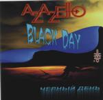

| Artist: | Azazello |
| Title: | Black Day |
| Label: | Azazello/Moonchild Records 34926 |
| Length(s): | 48 minutes |
| Year(s) of release: | 2000 |
| Month of review: | 06/2000 |
| 1) | Beginning Of The End | 6.59 |
| 2) | Black Day | 4.42 |
| 3) | I Love That World | 6.04 |
| 4) | Free Flight | 4.46 |
| 5) | Demon Of Love | 6.11 |
| 6) | Take Your Choice! | 6.40 |
| 7) | Night Before Christmas | 10.44 |
| 8) | Christmas | 2.15 |